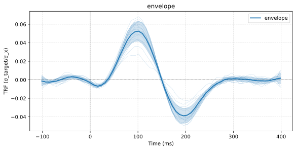

Quickstart¶
The core idea¶
For every response channel, TRFlearn estimates a kernel w(feature, delay) so that
Each feature contributes a lagged sub-design over its own delay window; the blocks are
concatenated into a design matrix X, and a regularized least-squares system is solved:
where M is the penalty (identity for ridge, a temporal Laplacian for
ridge-laplacian) and λ the regularization strength.
End to end¶
Everything below runs as-is: it simulates a stimulus and an EEG recording whose true TRF is known, then recovers it. Swap the simulated arrays for your own and the rest stays the same.
import numpy as np
from trflearn import TRFData, TRFModel
# ---- Simulated data: 3 minutes at 128 Hz, 16 EEG channels ----------------
rng = np.random.default_rng(0)
sample_rate, n_samples, n_channels = 128, 128 * 180, 16
# A speech-like envelope: smoothed, rectified noise, shape (n_samples, 1).
smoothing = np.hanning(25) / np.hanning(25).sum()
rectified = np.abs(rng.standard_normal(n_samples))
envelope = np.convolve(rectified, smoothing, "same")[:, None]
# The ground truth: a positive peak at 100 ms and a negative one at 200 ms,
# with a different gain on every channel.
t = np.arange(int(0.4 * sample_rate)) / sample_rate
peak = np.exp(-((t - 0.1) / 0.03) ** 2)
trough = np.exp(-((t - 0.2) / 0.04) ** 2)
true_trf = peak - 0.6 * trough
gains = rng.uniform(0.5, 1.5, n_channels)
# EEG = the envelope filtered by the TRF on every channel, plus noise.
response = np.convolve(envelope[:, 0], true_trf)[:n_samples]
noise = rng.standard_normal((n_samples, n_channels))
eeg = response[:, None] * gains + 2 * response.std() * noise
# ---- 1) The data container ------------------------------------------------
# Holds every candidate feature and the response. It is lazy: nothing heavy is
# built until a model asks for it.
data = TRFData(features={"envelope": envelope}, y=eeg, sample_rate=sample_rate)
data.create_partitions() # 5 contiguous folds
# ---- 2) The model ---------------------------------------------------------
# Picks the features to use and the delays to estimate, in seconds.
model = TRFModel(
TRFDataset=data,
features=["envelope"],
default_window=(-0.1, 0.4),
solver="ridge",
)
# ---- 3) Choose the regularization by cross-validation, then fit -----------
# Searches np.logspace(-3, 3, 13) and chooses on R².
best_regularization, (trfs, r2) = model.gridsearchCV(validation_plot=False)
# ---- 4) Look at the result ------------------------------------------------
fig = model.plot_average("envelope")

The recovered kernel has the peak at 100 ms and the trough at 200 ms that were put into the simulation; each thin line is one channel and the band is the spread across them.
What came out¶
best_regularization— the regularization strength that scored best on held-out data inside each training fold.model.validation_plot()shows the whole curve.trfs— a dict with one kernel per feature, shaped(n_folds, n_channels, n_subfeatures, n_delays): here(5, 16, 1, 65), since -0.1 s to 0.4 s at 128 Hz is 65 delays.r2— the R² of the predicted against the recorded EEG on the held-out folds, one value per channel.λwas chosen on it too; passmetric="Pearson"when prediction accuracy is the result (see Recommendations).model.coef_— the kernels averaged over folds,(n_channels, n_subfeatures, n_delays)per feature. It is whatmodel.predict()applies, either to the data's own stimulus or to a new one,model.predict({"envelope": new_envelope}).
Beyond this example¶
The same four steps cover the rest of the library; only the arguments grow.
- Several features and their interactions — pass more arrays to
TRFData(a spectrogram is just an(n_samples, n_bands)feature) and name them infeatures, with tuples for interactions:["envelope", ("envelope", "pitch")]. See Features. - A different window per feature —
feature_windows={"onsets": (0, 0.8)}. - Smoother kernels —
solver="ridge-laplacian"penalizes the difference between neighbouring delays instead of amplitude; not for a predictor with little signal. See Solvers and Recommendations. - Recordings split in trials or sessions — pass lists of arrays, one per
segment;
create_partitions()then stratifies the folds by segment. - MNE data — pass an
mne.Rawasyto keep the montage, and get topographies withmodel.plot_joint("envelope"). - A cohort —
TRFGroupfits one specification across subjects and runs the group statistics. See Group analysis.
Where to go next¶
- Concepts — how the container, folds, models, features, solvers and preprocessing fit together.
- Plotting — inspect kernels and metrics at model / subject / cohort level.
- Group analysis — fit a cohort and run TFCE.
- Tutorials — four executed notebooks on synthetic data, from simulating a signal with a known answer to recovering it.
- Examples — complete analyses on real recordings, including an 17-subject EEG cohort.